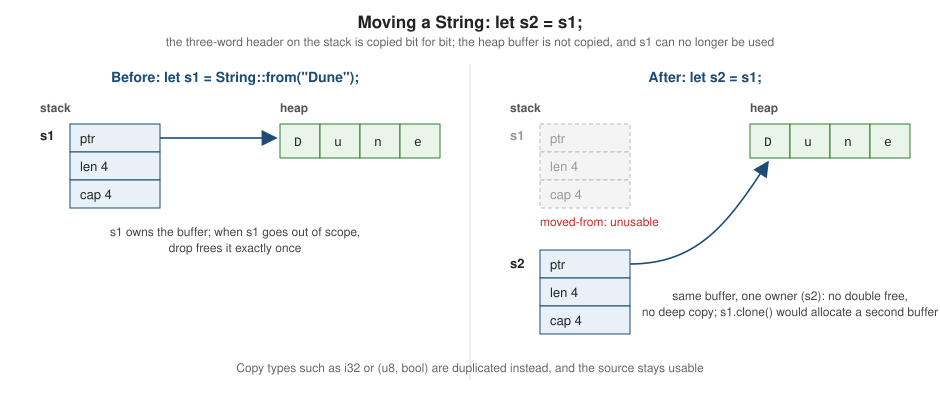

Ownership & Moves
|
This content was generated with the assistance of AI and should be verified against the official documentation before being relied on in production. |
This page is written against Rust 1.99.0 and the 2024 edition, checked on 2026-10-06. Ownership is the feature
that most distinguishes Rust from other languages. It is a set of rules, checked entirely at compile time, that
decide when memory is freed — without a garbage collector (Go’s approach is on Memory Management and Garbage Collection) and without manual free calls. Every other memory-safety
guarantee in Rust builds on it. This page covers owning and moving values; the next page,
Borrowing & References, covers using values
without owning them.
Why ownership exists
Every program has to decide when the memory it allocates is released. Languages take three approaches:
-
garbage collection (Java, C#, Go, Python, JavaScript): a runtime finds unreachable memory and frees it — safe, but with pauses, overhead and less control over when resources are released;
-
manual management (C, and C++ without smart pointers): the programmer calls
free/delete— fast, but one mistake causes a use-after-free, a double free or a leak; -
ownership (Rust): the compiler tracks which variable owns each value and inserts the code to free it at the exact point the owner goes away. Code that would use memory after it is freed does not compile.
Ownership applies to every resource, not just memory: files, sockets, locks and database transactions are released the same way, deterministically, when their owner goes out of scope.
Stack and heap
Rust, like C and C++, gives you control over where values live:
-
The stack stores values whose size is known at compile time. Allocation and deallocation are just pointer adjustments, done automatically when a function is called and returns. Integers, floats,
bool,char, arrays, tuples and structs of those live on the stack (or inline inside whatever contains them). -
The heap stores data whose size is only known at run time or that must outlive the function that created it — the characters of a growable
String, the elements of aVec, a value in aBox. Allocation asks the allocator for space and returns a pointer; the memory must be given back exactly once.
A String combines both: a small fixed-size header on the stack (a pointer to the heap buffer, the length in use
and the capacity of the buffer — three usize words) and the UTF-8 bytes in a heap buffer. A string literal such
as "Dune" is different: its bytes are stored in the program binary and the literal is a &'static str, a borrowed
view that nobody needs to free.
fn main() {
let literal: &str = "Dune"; // bytes live in the binary; nothing to free
let mut owned = String::from("Dune"); // bytes live on the heap; `owned` must free them
owned.push_str(" Messiah"); // can grow: may reallocate the heap buffer
println!("{literal} / {owned} (len {}, capacity {})", owned.len(), owned.capacity());
println!("String header: {} bytes", size_of::<String>()); // 24 on 64-bit targets
} // `owned` goes out of scope here: its heap buffer is freedSource: The Book: What Is Ownership?
The three ownership rules
The Book states the rules in three lines:
-
Each value in Rust has an owner.
-
There can only be one owner at a time.
-
When the owner goes out of scope, the value will be dropped.
"Dropped" means the value’s destructor runs: for a String, its heap buffer is freed; for a File, the file
descriptor is closed; for a MutexGuard, the lock is released. The compiler inserts the call to drop at the closing
brace of the scope that owns the value. This pattern is known as RAII (Resource Acquisition Is Initialisation),
borrowed from C++.
struct Book {
title: String,
}
impl Drop for Book {
fn drop(&mut self) {
println!("dropping {}", self.title);
}
}
fn main() {
let _a = Book { title: "Dune".into() };
{
let _b = Book { title: "Emma".into() };
println!("end of inner scope");
} // _b dropped here
println!("end of main");
} // _a dropped here
// Output:
// end of inner scope
// dropping Emma
// end of main
// dropping DuneSource: Rust by Example: RAII
Values are dropped in the reverse order of declaration; the full drop-order rules, including fields and temporaries, are on Drop, RAII & Drop Check.
Move semantics
Rule 2 — one owner at a time — is enforced by moves. Assigning a value to another variable, passing it to a function by value, or returning it moves it: the bits of the stack part are copied, ownership transfers to the destination, and the source becomes unusable.

If both s1 and s2 remained usable after let s2 = s1;, both would try to free the same buffer when they went out
of scope — a double free. Rust prevents it by treating s1 as moved. Using it afterwards is error
E0382:
fn main() {
let s1 = String::from("Dune");
let s2 = s1;
println!("{s1}, {s2}"); // error[E0382]: borrow of moved value: `s1`
}Source: Error E0382
# error[E0382]: borrow of moved value: `s1`
# --> src/main.rs:4:16
# |
# 2 | let s1 = String::from("Dune");
# | -- move occurs because `s1` has type `String`, which does not implement the `Copy` trait
# 3 | let s2 = s1;
# | -- value moved here
# 4 | println!("{s1}, {s2}");
# | ^^^^ value borrowed here after move
# |
# help: consider cloning the value if the performance cost is acceptableA move is always a shallow, bitwise copy of the value’s stack representation (which the optimiser often removes
entirely); Rust never runs user code on a move, unlike C++ move constructors. A moved-from variable can be
re-assigned (if it is mut), after which it is usable again.
Moves happen in loops too: moving a value inside a loop body moves it in the first iteration, so the second iteration gets E0382 ("value moved here, in previous iteration of loop").
Copy and Clone
Some types are cheap and safe to duplicate bit for bit because they own no resources. Those types implement the
Copy marker trait, and assigning them copies instead of moving — the source stays usable:
-
all integer and float types,
bool,char; -
shared references
&T(but not&mut T); -
raw pointers, function pointers and function items;
-
tuples and arrays whose elements are all
Copy; -
your own structs and enums if every field is
Copyand you#[derive(Clone, Copy)].
A type that owns heap memory or implements Drop can never be Copy. For those, duplication is explicit: call
.clone(), which performs a deep copy (for String, a new heap buffer with the same bytes). The explicitness is
intentional: an expensive operation is visible in the code.
#[derive(Debug, Clone, Copy, PartialEq)]
struct Rating {
stars: u8,
verified: bool,
}
#[derive(Debug, Clone)]
struct Review {
title: String, // owns heap memory, so Review cannot be Copy
rating: Rating,
}
fn main() {
let r1 = Rating { stars: 5, verified: true };
let r2 = r1; // copy: r1 still usable
println!("{r1:?} {r2:?}");
let a = Review { title: "Dune".into(), rating: r1 };
let b = a.clone(); // explicit deep copy
let c = a; // move: `a` is no longer usable
println!("{b:?} {c:?}");
}Source: The Book: Stack-Only Data: Copy
Copy |
Clone |
|
|---|---|---|
How it happens |
implicitly, on assignment and by-value use |
explicitly, by calling |
What it does |
bitwise copy, always cheap |
whatever the type’s |
Requirement |
all fields |
none (but |
Typical types |
numbers, |
|
The cost of clone versus move
A move of a String copies 24 bytes, whatever the length of the text. A clone allocates and copies every byte. In
hot paths, such as per-request code in a web service, unnecessary clones show up as allocator time in profiles, and
cloning a large structure "to make the borrow checker happy" is a classic anti-pattern (see
Idioms, Patterns & API Guidelines). The
fixes are to move when the value is no longer needed, borrow when it is, and use reference counting (Rc/Arc,
whose clone only increments a counter) when ownership must genuinely be shared — see
Smart Pointers.
Ownership and functions
Passing a value to a function moves or copies it exactly as assignment does, and returning a value moves it out to the caller:
fn take(title: String) -> usize {
title.len()
} // `title` is dropped here: the caller's String is freed
fn make_label(year: u16) -> String {
let label = format!("published {year}");
label // ownership moves to the caller; nothing is freed
}
fn add_suffix(mut title: String) -> String {
title.push_str(" (2nd ed.)");
title // take ownership, modify, give it back
}
fn main() {
let title = String::from("Dune");
let year = 1965u16;
let n = take(title); // title moved into the function
let label = make_label(year); // year copied: u16 is Copy
println!("{n} {label} {year}");
// println!("{title}"); // would not compile: title was moved (E0382)
let edition = add_suffix(String::from("Emma"));
println!("{edition}");
}Taking ownership and handing it back, as add_suffix does, is sometimes the right API (builders do it), but for "use
this value for a moment" it is clumsy. That is what references are for: fn len(title: &str) -> usize borrows the
string and leaves ownership with the caller. A good rule for function parameters:
-
take
Twhen the function needs to keep or consume the value (store it in a struct, send it to a thread); -
take
&Twhen it only reads; -
take
&mut Twhen it modifies in place.
Partial moves
Moving a field out of a struct, or binding by value in a pattern, moves only that part. The rest of the struct stays usable, but the struct as a whole cannot be used or moved anymore:
#[derive(Debug)]
struct Loan {
member: String,
title: String,
days: u16,
}
fn main() {
let loan = Loan { member: "alice".into(), title: "Dune".into(), days: 21 };
let member = loan.member; // partial move of one field
println!("{member} borrowed {} for {} days", loan.title, loan.days); // other fields still usable
// println!("{loan:?}"); // would not compile: borrow of partially moved value (E0382)
let Loan { title, ref member, .. } = Loan { member: "bob".into(), title: "Emma".into(), days: 7 };
println!("{title} {member}"); // `title` moved out, `member` borrowed with `ref`
}Source: Rust by Example: Partial moves
You cannot move a field out of a type that implements Drop (error
E0509), because its destructor expects every field to still be
there. And you cannot move out of something you only borrow — for example let t = some_ref.title; or moving an
element out of a Vec by indexing — which is error E0507. The
fixes are to clone, to borrow (&v[0]), or to take the value out while leaving something in its place with
std::mem::take, mem::replace or Option::take:
fn main() {
let mut titles = vec![String::from("Dune"), String::from("Emma")];
// let first = titles[0]; // would not compile: cannot move out of index (E0507)
let first = std::mem::take(&mut titles[0]); // leaves an empty String behind
let second = titles.swap_remove(1); // removing from the Vec transfers ownership
println!("{first} {second} {titles:?}"); // Dune Emma [""]
}Source: The Book: What Is Ownership?
Moves and borrows: E0505
You cannot move a value while it is borrowed, because the reference would dangle. This is error E0505:
fn consume(title: String) {
drop(title);
}
fn main() {
let title = String::from("Dune");
let first_word = title.split(' ').next().unwrap_or(""); // borrows `title`
consume(title); // error[E0505]: cannot move out of `title` because it is borrowed
println!("{first_word}");
}Source: Error E0505
The fix is to finish using the borrow before moving (here, move the println! up), or to make the borrowed part an
owned value (.to_owned()) so it no longer depends on title.
Why there is no garbage collector — and why leaks are still possible
Because each value has exactly one owner and the compiler knows statically where every owner’s scope ends, it can
insert every deallocation itself. There is nothing for a collector to do. Shared ownership exists, but it is explicit
(Rc, Arc) and uses reference counting, not tracing.
Ownership guarantees memory safety — no use-after-free, no double free, no dangling references — but it does not guarantee that memory is always freed. Leaking memory is considered safe in Rust:
-
std::mem::forget(value)deliberately skips a value’s destructor; -
Box::leakturns a box into a&'static mut Tthat is never freed (useful for data that lives for the whole program); -
a reference cycle of
RcorArcpointers keeps its members alive forever unless one link is aWeak.
use std::cell::RefCell;
use std::rc::Rc;
struct Node {
next: RefCell<Option<Rc<Node>>>,
}
fn main() {
let a = Rc::new(Node { next: RefCell::new(None) });
let b = Rc::new(Node { next: RefCell::new(Some(Rc::clone(&a))) });
*a.next.borrow_mut() = Some(Rc::clone(&b)); // a -> b -> a: a cycle
println!("strong counts: a={}, b={}", Rc::strong_count(&a), Rc::strong_count(&b)); // 2, 2
} // both counts drop to 1, never to 0: the two nodes are leaked (safely)So "Rust catches memory leaks at compile time", a claim in Yoon’s Beginning Axum (chapter 1), is not accurate: Rust
prevents unsafe memory errors at compile time, and leaks are possible though uncommon. In long-running services, an
Arc cycle between, for example, a connection registry and its connections is a real leak that shows up as slowly
growing memory (Gangappa & Rangaraj discuss this in chapter 2 of Mastering Distributed Observability in Rust); the
fix is a Weak back-reference, as shown in Smart Pointers.
Source: The Rustonomicon: Leaking
Common errors
| Error | Meaning and usual fix |
|---|---|
use of a moved value: borrow instead of moving, clone if a second copy is really needed, or restructure so the value is used before it is moved |
|
move out while borrowed: end the borrow first, or own the borrowed data |
|
move out of borrowed content ( |
|
move a field out of a type that implements |
|
re-assigning an immutable binding (including after a move):
add |
Where the books are outdated
Besides the leak claim corrected above, the books present ownership before the 2024 edition and some of their examples rely on 2021 temporary-scope rules (see Control Flow); the ownership rules themselves are unchanged. Gangappa & Rangaraj’s discussion of clone-versus-move costs in services (chapter 2) is consistent with the official documentation.